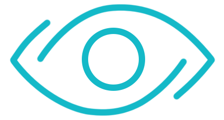
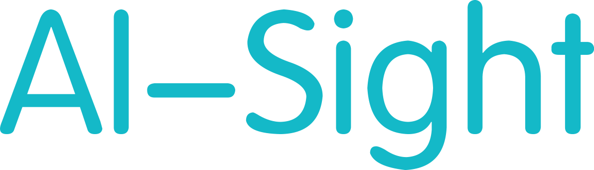

<div class="page" data-page="about">
    <div class="navbar">
        <div class="navbar-inner">
            <div class="left">
                <a href="#" class="link icon-only open-panel">
                    <i class="icon icon-bars"></i>
                </a>
                About
            </div>
        </div>
    </div>


      <div class="ai-logo2 hCenter"></div>
      <div class="ai-text2 hCenter"></div>


    <div class="copyright">
      <center>
      GRP Team3:<br>
      Razin <br>
      Leslie<br>
      Ablert<br>
      Chang<br>
      Sven<br>
      Gabriel <br>
      supervisor:Richard Chang<br>
    </center>
    </div>

    <div class="text">

      AI-Sight is an app that aims to help
      those people who have bad eye sight to view this world better.


    </div>
</div>
